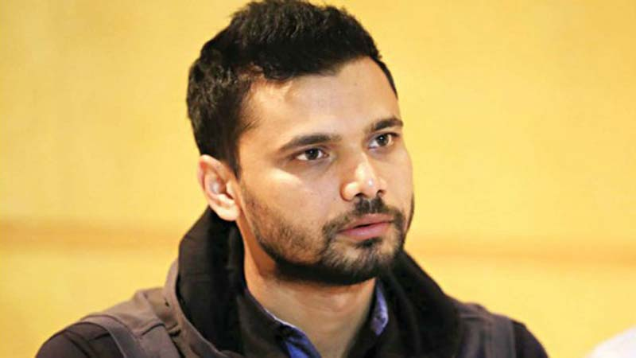
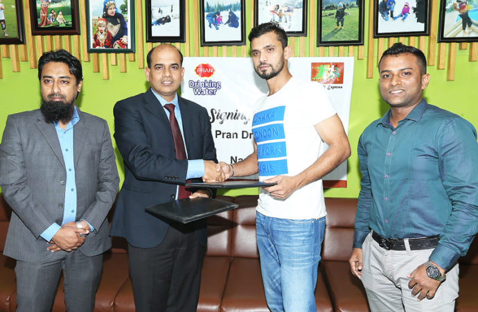
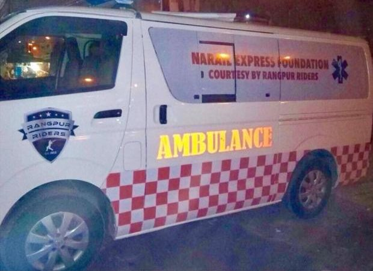

Mashrafe launches "Narail Express" foundation
Bangladesh ODI captain Mashrafe Bin Mortaza launched a foundation named Narail Express for ensuring overall development of the district.On the occasion of launching ceremony of the foundation, a 3-km procession titled “Run for Narail” led by Mashrafe was brought from the historic Badhaghat Square which later ended at Narail Shilpakala Academy Complex in the afternoon.‘Narail Express’ foundation will work for fulfilling various spcio-cultural agenda. These include enhancing civil facilities, emphasising on specialized education system, introducing humane education at schools, eradicating unemployment, increasing cultural activities, providing various trainings on sports, making attractive tourist spots centring Chitra river, transforming the district town into a ICT one and making an entertainment-friendly city
Pran Drinking Water stands beside Mashrafes foundation
Pran Drinking Water has taken an initiative to stand beside the Narail Express Foundation, established by Bangladesh ODI captain Mashrafe bin Mortaza. Mashrafe set up the foundation to ensure overall development of Narail, home district of the Tigers skipper.In this regard, Pran Beverage Limited signed an agreement with Narail Express Foundation. Under this agreement, Mashrafe’s foundation will get financial support from Pran Drinking Water. In addition, the logo of the foundation will be used in the bottle of the drinking water. Mashrafe, chairman of the foundation, and Anisur Rahman, executive director of Pran Beverage Limited, exchanged documents of the agreement on behalf their respective organisations in Mirpur, Dhaka Sunday.
Mashrafe said, My dream is to see a better Narail by the grace of the foundation where the district will get prosperity in all sectors, including education, health, ICT, tourism, sports and culture. I thank Pran Drinking Water authority for supporting us. Anisur said, Mashrafe is a big hearted person. We are happy to be engaged with his foundation.Tarikul Islam Anik, general secretary of Narail Express Foundation, Atikur Rahman, head of marketing and Abdullah al Jaber, brand manager of Pran Beverage Limited, among others, were also present at the signing programme.
Rangpur Riders grant Mashrafe his wish
Rangpur Riders have presented their skipper Mashrafe Bin Mortaza and the “Narail Express Foundation” with an ambulance, within seven days of their Bangladesh Premier League title victory.Before joining the BPL franchise, Mashrafe asked for an ambulance from the management for philanthropic purposes, which was handed over to his foundation.